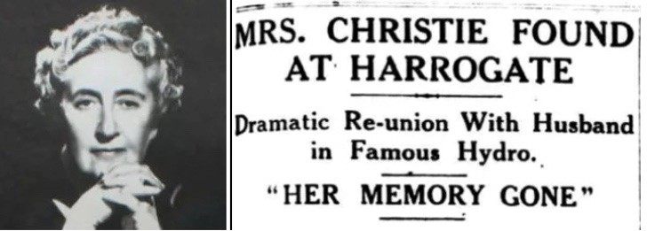
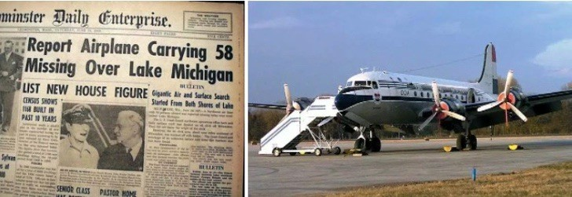
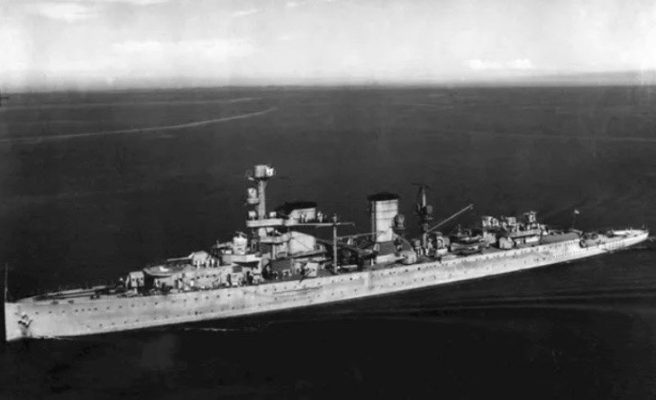
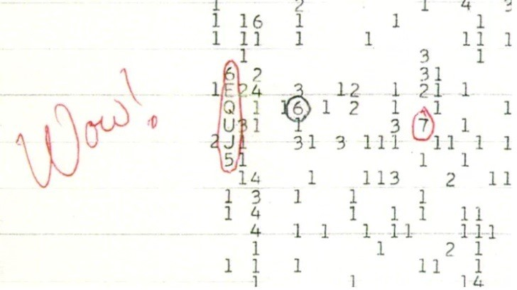
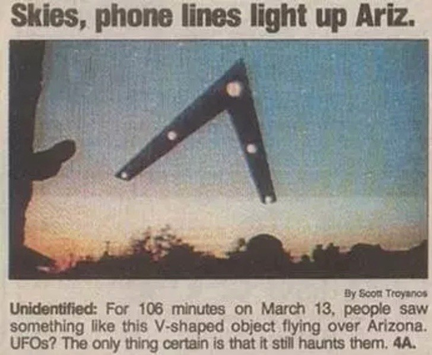
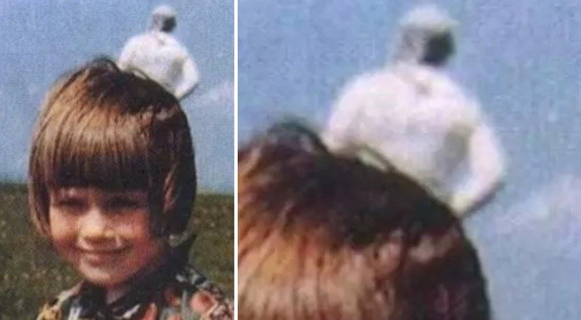
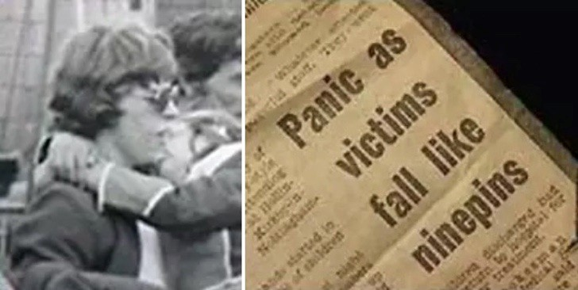

En esta pagina descubriras las historias mas tetricas y aterradoras jamas contadas leyendas y hechos aterradores te mostraremos el lados mas oscuro de este mundo,espero que te deleites con nuestro contenido

HECHOS ESCALOFRIANTES
El mundo es un enigma. Hay cientos de misterios y mitos que nunca resolveremos. Durante la historia, se han producido diferentes sucesos que no han dejado a nadie indiferente, y han sido tan impactantes que se han transformado en íconos de la época en que se desarrollaron.
Aunque los años pasen y las generaciones cambien, éstos permanecen en la memoria colectiva como los incidentes más extraños, perturbadores e inquietantes que han ocurrido jamás. No tienen explicación ni precedentes.
Estos hechos podrían tratarse de películas de ficción, suspenso o terror. Pero no son más que la vida real, sin efectos especiales ni computarizados.
La desaparición de Agatha Christie
Si a alguien le podría ocurrir esto, tenía que ser a la autora de misterio más reconocida de todos los tiempos. Estuvo 11 días desaparecida y fue la búsqueda más grande de ese tiempo. Encontraron su auto abandonado, sin signos de accidente, y ella estaba en un hotel de Londres sin recordar nada. El detective Poirot lo hubiese resuelto sin problemas…
El vuelo 2501 desapareció sin rastro
55 pasajeros y tres miembros de cabina desaparecieron en un vuelo de Nueva York a Seattle. Nunca se supo la razón ni se encontraron los cuerpos.
La mujer que murió sin nombre
En 1970 encontraron muerta a una mujer en el “Valle de la Muerte” en Noruega. Había fallecido por tomar tantas pastillas para dormir. Jamás pudieron identificar su nombre ni quién era. No había registros
Asesinato sin asesino
En 1932 una trabajadora sexual de Estocolmo, Suecia, fue asesinada en su hogar. La policía la encontró cuando ya llevaba 3 días muerta pero lo más perturbador de todo es que junto a ella habían botellitas repletas de sangre…le habían drenado toda la sangre. Hasta el día de hoy no se sabe quién fue el criminal.
Las tumbas vivientes
En 1800 se decía que las tumbas de una iglesia Cristiana cambiaban de lugar. Quién sabe…los muertos estaban incómodos.
Los fantasmas de Toys R Us
Antes de construirse esta juguetería, el sitio era de una granja. La leyenda cuenta que un granjero murió por culpa de una trituradora de madera, y ahora los empleados del lugar aseguran que los acechan espíritus.
La misteriosa desaparición de los barcos alemanes y británicos.
Estas naves marítimas de la Segunda Guerra Mundial desaparecieron en Indonesia y nunca se supo de ellos, hasta el 2002 que los encontraron y derribaron todas las teorías que apuntaban a un robo y posterior venta.
El asesino de la biblia
Tres mujeres fueron asesinadas en 1960. Testigos por separado le dijeron a la policía que el hombre que las había matado recitaba párrafos de la biblia antes. Sabían que para los tres asesinatos era el mismo criminal, pero jamás pudieron identificar quién era.
Mensajes de extraterrestres
Un telescopio radial específicamente para recibir mensajes de extraterrestres tomaron una señal en agosto de 1977 en Ohio, Estados Unidos. Un astrónomo se dio cuenta de que una de las datas venía de la constelación Sagitario. Estaba tan impactado que escribió “wow” al lado de los 72 segundos de disturbio. Desafortunadamente, la pequeña señal no fue capaz de confirmar que los aliens existían.
La visita del Ovni
En 1997 personas desde Fénix hasta Sonora, México, vislumbraron en el cielo una especie de triángulo iluminado por 106 minutos. Nadie dio explicaciones certeras de lo ocurrido y hasta el día de hoy se piensa que fueron avistamientos de extraterrestres.
El hombre fantasma de la foto
En 1964 un hombre le sacó una fotografía a su hijo pequeño. Estaban solos los dos, pero cuando vio el resultado de la foto se impactó: aparecía en el fondo un hombre vestido de blanco. Le aseguró a la policía que no había nadie más allí.
La reencarnación de las mellizas
En 1957 las mellizas Polock fallecieron en un accidente de auto. En 1958 su madre se embarazó de mellizas, pero lo extraño fue que querían pedían jugar con cosas de sus hermanas fallecidas, se acordaban de lugares que jamás habían ido (sus hermanas sí) y una nació con una mancha de nacimiento igual a la que tenía una de las mellizas fallecidas.
Las náuseas colectivas
En 1980 en un evento púbico en Londres, 300 personas, adultos y niños, colapsaron al mismo tiempo. Algunos científicos dicen que fue a causa de los pesticidas en el aire, pero nunca se confirmó.
La azafata sobreviviente
En 1972 una bomba explotó en un avión causando una colisión a metros sobre la tierra. La única sobreviviente fue una azafata que cayó a 10 mil metros de altura SIN PARACAÍDAS. Es imposible entenderlo.
Es increíble las cosas que pueden ocurrir en el mundo y jamás tendrán una explicación…
Escrito por Paul Rodriguez